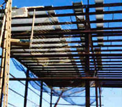

|  |
| A safety net is being used under the roof of this building as an acceptable fall protection system. |
Where workers on a construction site are exposed to vertical drops of 6 feet or more, OSHA requires that employers provide fall protection in one of three ways before work begins:
- Placing guardrails around the hazard area,
- Install safety nets, or
- Providing personal fall arrest systems for each employee.
Many times the nature and location of the work will dictate the form that fall protection takes. If the employer chooses to use a safety net system, he must comply with the following provisions:
- Safety nets must be installed as close as practicable under the surface on which employees are working, but in no case more than 30 feet below.
- When nets are used on bridges, the potential fall area must be unobstructed.
- Safety nets must extend outward from the outermost projection of the work surface as follows:
| Vertical
distance from working level to horizontal plane of net |
Minimum required horizontal distance of outer edge of net from the edge of the working surface |
| Up to 5 feet | 8 feet |
| 5 to 10 feet | 10 feet |
| More than 10 feet | 13 feet |
- Safety nets must be installed with sufficient clearance to prevent contact with the surface or structures under them when subjected to an impact force equal to the drop test described below.
- Safety nets and their installations must be capable of absorbing an impact force equal to the drop test described below.
- Safety
nets and safety net installations must be drop-tested
at the jobsite:
- After initial installation and before being used.
- Whenever relocated.
- After major repair.
- At 6-month intervals if left in one place.
- The drop test consists of a 400 pound bag of sand 28-32 inches in diameter dropped into the net from the highest surface at which employees are exposed to fall hazards, but not from less than than 42 inches above that level.
- When the
employer can demonstrate that it is unreasonable to perform the drop-test
described above, the employer or a designated competent person
shall certify that the net and net installation have sufficient
clearance and impact absorption by preparing a certification record
prior to the net being used as a fall protection system. The
certification must include:
- Identification of the net and net installation.
- Date that it was determined that the net and net installation were in compliance.
- Signature of the person making the determination and certification.
- The most recent certification record for each net and net installation must be available at the jobsite for inspection.
- Safety nets must be inspected for wear, damage, and other deterioration at least once a week, and after any occurrence which could affect the integrity of the system.
- Defective nets shall not be used, and defective components must be removed from service.
- Objects which have fallen into the safety net, such as scrap pieces, equipment, and tools, must be removed as soon as possible from the net and at least before the next work shift.
- Maximum mesh size must not exceed 6 inches by 6 inches. All mesh crossings must be
secured to prevent enlargement of the mesh opening, which must be no longer
than 6 inches, measured center-to-center. - Each safety net, or section thereof, must have a border rope for webbing with a minimum breaking strength of 5,000 pounds.
- Connections between safety net panels must be as strong as integral net components, and must not be spaced more than 6 inches apart.